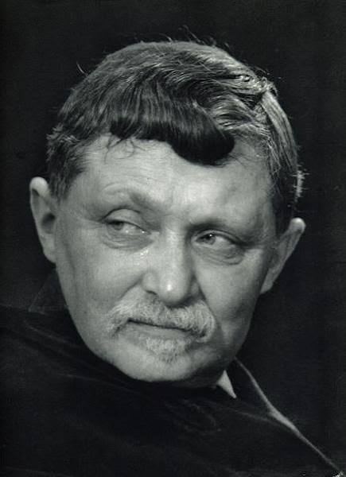

Queens College Philosophy Conference
Beyond Function
The Self in the Modern World

01 / Call for Papers
The Self and the Modern Condition
The French existentialist Gabriel Marcel once diagnosed the defining problem of modernity as the “misplacement of the idea of function.” In his famous essay, “On the ontological Mystery,” he describes modern society as essentially empty because it increasingly understands both the world and the person in terms of utility, efficiency, productivity, quantifiable performance, etc. In such a climate, the human person is easily reduced to a collection of functions rather than recognized as a unique and irreducible self. Marcel’s critical analysis of the modern condition—as well as many of the early existentialist such as Martin Buber, Karl Jaspesrs, Martin Heidegger, and even Soren Kierkegaard—raised serious concerns and broader philosophical questions that continue to confront us today, nearly a century later. How does contemporary social, technological, political, and economic structures shape our understanding of ourselves? Do they promote authentic selfhood, or do they encourage forms of alienation that obscure what it means to be human?
This conference invites scholars to explore the relationship between the self and the modern condition. We seek philosophical reflection on the nature of selfhood and the ways contemporary realities influence our understanding of personal identity, agency, freedom, community, and what it means to live “the good life.” We are particularly interested in papers that examine how modern technological, scientific, philosophical, social, political, or religious developments contribute to—or challenge—our understanding of the self and the conditions of a good, meaningful, fulfilling human life. Deeper philosophical reflection on the self enables us to reconsider or re-envision not only who we are, but also what kinds of conditions are necessary for genuine human flourishing. We welcome papers that creatively engage these questions from historical or contemporary perspectives, or that draw upon interdisciplinary approaches illuminating the nature of selfhood in the modern world.
02 / Areas of Interest
Preference will be given to papers related to the following topics:
- What does it mean to be a self in the modern world?
- Religion, spirituality, and the formation of the self
- Human flourishing in the modern world
- Selfhood, agency, and autonomy
- Freedom and responsibility in contemporary society
- Authenticity, alienation, and meaning
- Gabriel Marcel’s critique of modernity
- Technology and the formation of the self
- Artificial intelligence and human self-understanding
- Social media, digital life, and personal identity
- Individualism, community, and social belonging
- The self and the common good
- The self and political community
- Consumer society and the commodification of the person
- Globalization, culture, and identity
- Embodiment and lived experience
- Narrative identity and self-interpretation
- Memory, history, and the formation of the self
- Virtue, character, and moral development
- Existential and phenomenological approaches to selfhood
- Classical, modern, and contemporary philosophical accounts of the self
We are especially interested in — though not limited to — papers engaging thinkers such as Søren Kierkegaard, Gabriel Marcel, Karl Jaspers, Emmanuel Levinas, Martin Buber, Simone Weil, Charles Taylor, Alasdair MacIntyre, Hannah Arendt, Paul Ricoeur, Edith Stein, Maurice Merleau-Ponty, and other philosophers whose work contributes to our understanding of selfhood, personhood, and the challenges of modern existence.
03 / Organizer
About the Organizer
Anthony Malagon is a lecturer at Queens College. He has a Ph.D. in philosophy from Purdue University. He teaches classes on philosophy of religion, ethics, existentialism, and eastern philosophy. He takes an existential as well as analytic approach to explore questions of knowledge, truth, religion, ethics, and the self. He is editor of the collection The Religious Existentialists and the Redemption of Feeling, and has a forthcoming book, An Existential Proof of God.
Please address any questions to him at anthony.malagon@qc.cuny.edu.
65-30 Kissena Boulevard
Flushing, NY 11367 Visit the Philosophy Department